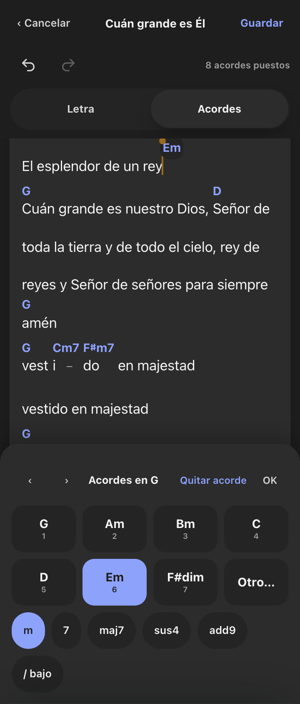
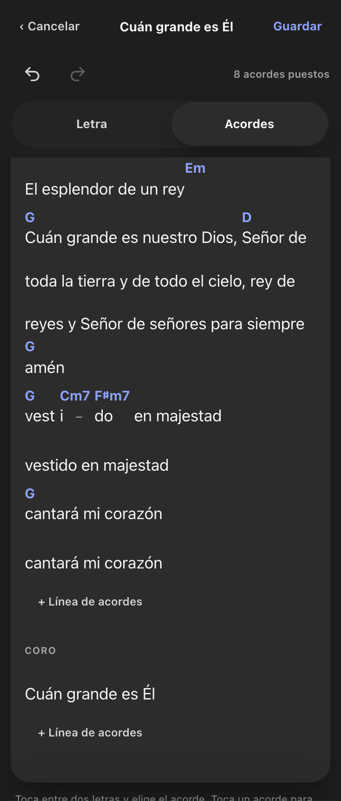
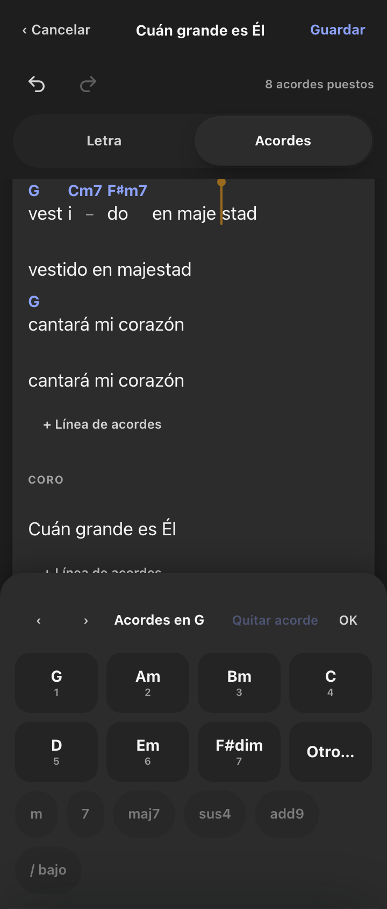
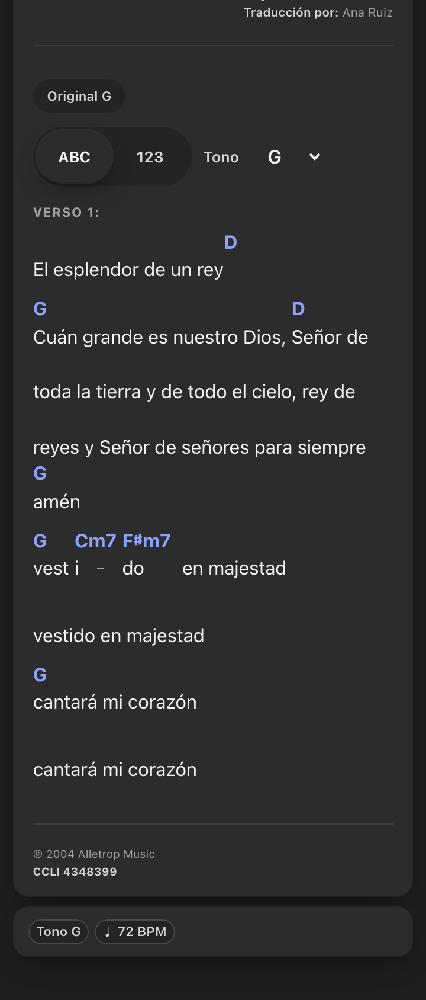

Acordes sobre la letra · 360 px · dark
Mockup
Editor · acorde al final de línea

Editor · frase larga, acordes largos cortos y cercanos

Editor · ancla entre dos letras

Lectura (HojaAcordes)

 Editor · acorde al final de línea
Editor · acorde al final de línea